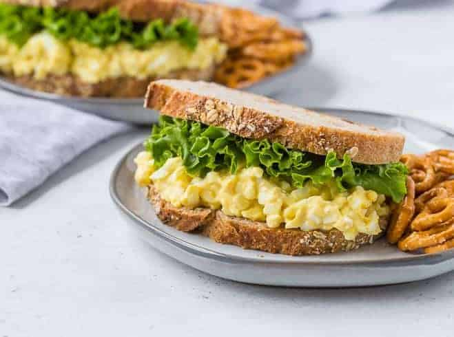

Egg Salad
Back to Home Page

Description:
This is a wonderful-tasting egg salad sandwich that you will definitely devour. It's really good on rye.
Ingredients:
- 8 eggs
- ½ cup mayonnaise
- 1 teaspoon prepared yellow mustard
- ¼ cup chopped green onion
- salt and pepper to taste
- ¼ teaspoon paprika
Steps:
- Place egg in a saucepan and cover with cold water. Bring water to a boil and immediately remove from heat. Cover and let eggs stand in hot water for 10 to 12 minutes.
Remove from hot water, cool, peel and chop..
- Place the chopped eggs in a bowl, and stir in the mayonnaise, mustard and green onion.
Season with salt, pepper and paprika. Stir and serve on your favorite bread or crackers.